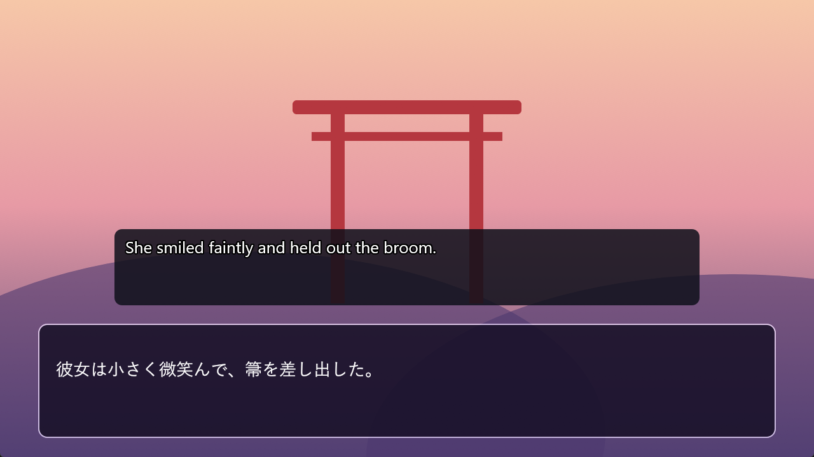
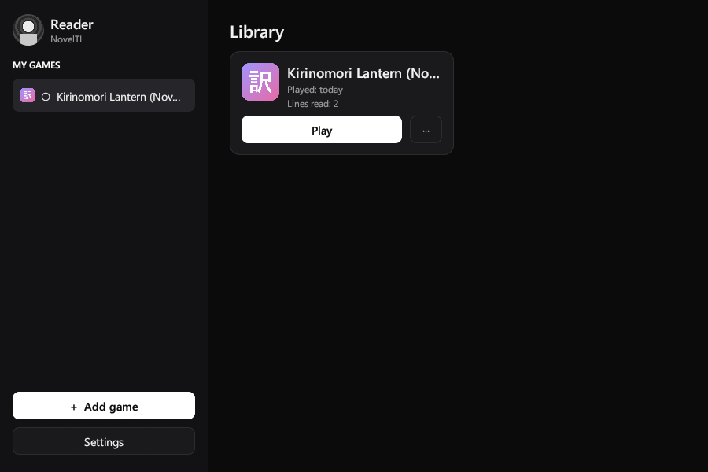
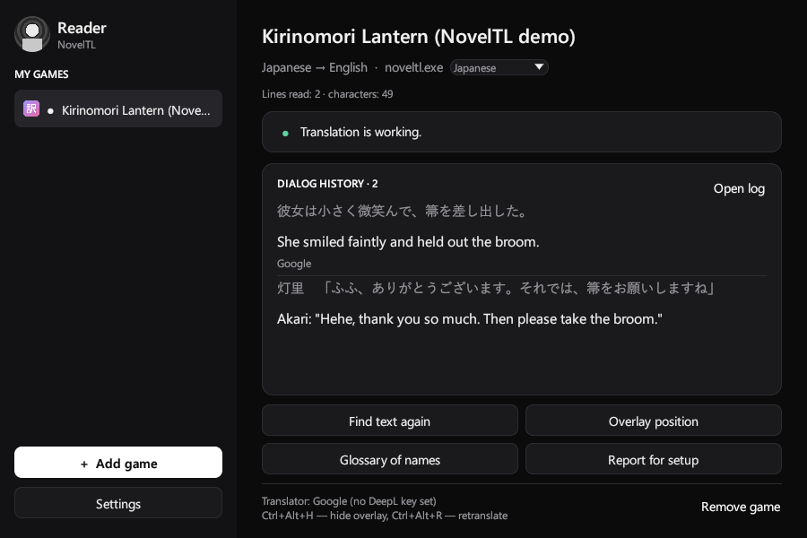
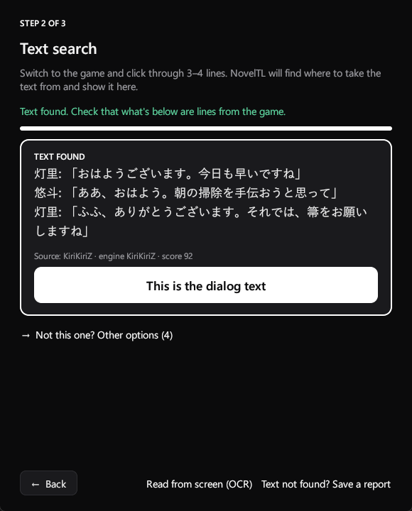
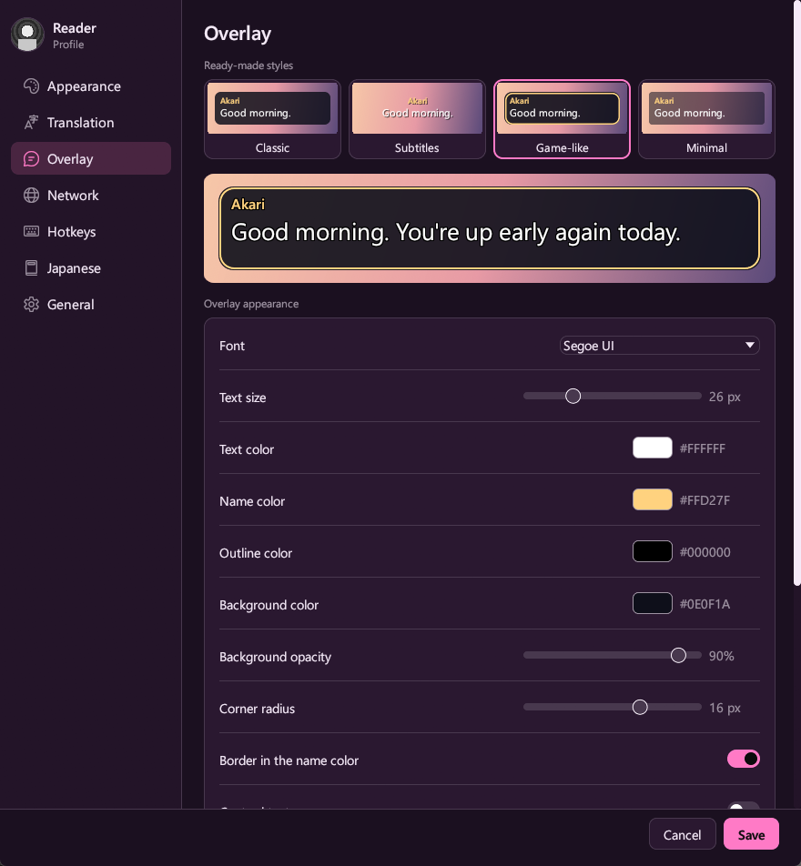
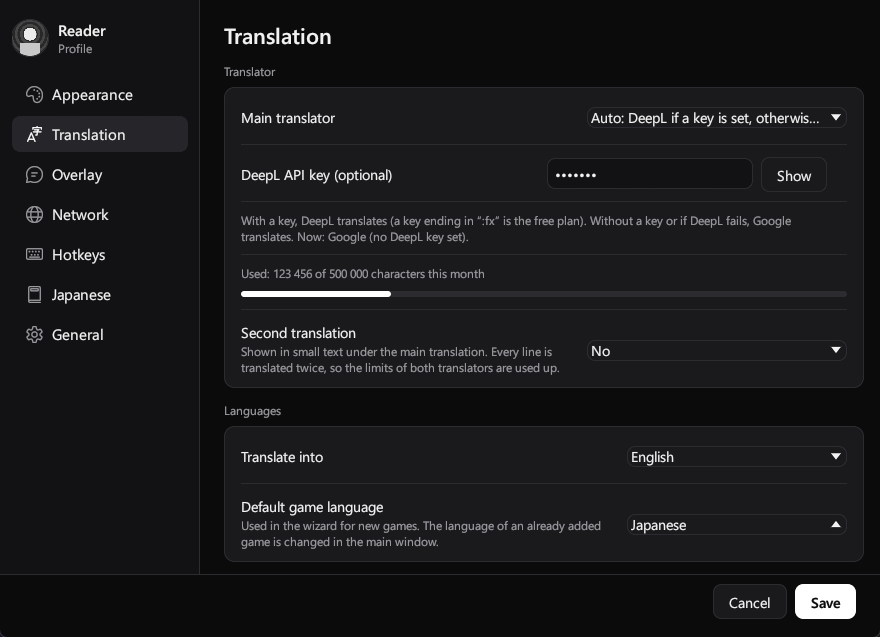
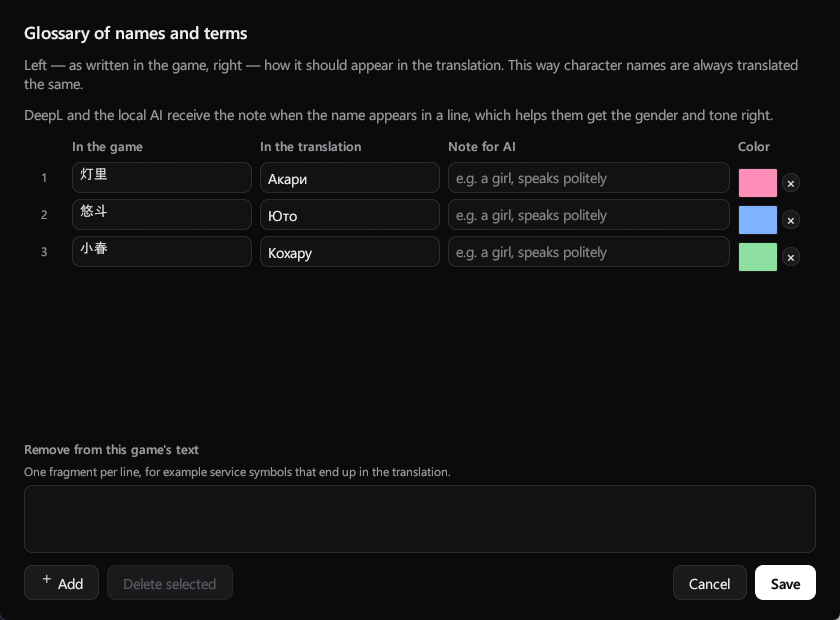

NovelTL
Visual novel translator for Windows — translation right on top of the game.

Features
Overlay on top of the game
Clicks go through it, it never steals focus and follows the game window.
5 languages, any direction
Japanese, English, Chinese, Korean and Russian — from any of them into any other.
DeepL and Google
Google without a key, DeepL with one; if DeepL refuses, Google takes over.
Free and offline options
Local AI (Ollama, LM Studio) and Microsoft Translator (2M characters a month).
Automatic hook detection
Click through 3–4 lines and it finds the dialogue thread. OCR is there if capture finds nothing.
Glossary of names
Names and terms come out the way you set them, with a color for each character.
For Japanese learners
Furigana, word meanings on hover (JMdict) and “Add to Anki”.
Your own look
Ready-made styles, font, colors, opacity, fade-in and typing effect.
How to start
- Choose the gameStart the game in windowed mode, press “Add game” in NovelTL and choose the game window and the source language.
- Find the textClick through 3–4 lines in the game, then press “This is the dialogue text”.
- Place the boxDrag the box onto the dialogue window of the game, stretch it and press “Done”.
Screenshots






Free and open source
NovelTL is distributed under the GPL-3.0-or-later license. Text capture is done by LunaHook from the LunaTranslator project, used without changes. NovelTL does not modify game files.